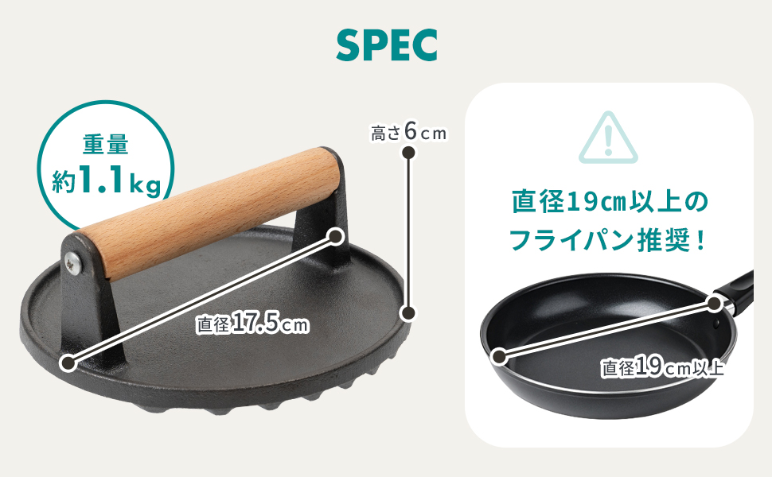

フライパンでベーコンやステーキ、鶏もも肉を焼くと、熱で身が縮んで中央が丸く反り返り、フチだけ焦げて真ん中は生っぽい——そんな焼きムラに心当たりはないだろうか。反り返った肉はフライパンとの接地面が減るため、パリッとした焼き色をつけたいときほど思うようにいかない。
その反りを上から押さえ、肉の全面をフライパンに密着させたまま焼くための道具が「ミートプレス」だ。この記事では、ミートプレスがどんな効果を持つのか、使い方や適した重さ、鉄製とステンレス製の違い、お手入れや代用の可否までを初心者向けに整理する。具体例として、鋳鉄製・約1.1kgのSIMPS ミートプレス（型番S-197）の公式スペックを客観的に見ていく。
ミートプレスとは？「乗せて焼く」だけで焼き上がりが変わる道具
ミートプレスは、フライパンやグリルで焼いている食材の上に乗せて重しにするための調理器具だ。肉は加熱するとタンパク質が縮み、身が反り返る。反った肉は中央がフライパンから浮いてしまうため、フチだけ焼けて真ん中に火が入りにくい。ミートプレスはこの反りを上から押さえ、食材の全面を熱源に密着させたまま焼く。これにより焼き色が均一につきやすく、火の通りもそろえやすくなる。
ベーコンやパンチェッタをカリッと仕上げたいとき、鶏もも肉の皮目をパリッと焼きたいとき、あるいはトルティーヤやパニーニを平らにプレスしたいときなど、「面で押さえて均一に焼く」場面で活躍する。今回例に挙げるSIMPS ミートプレス（型番S-197）は鋳鉄製で、重量約1.1kg・直径17.5cmのモデルだ。
SIMPS ミートプレス（S-197）の基本スペック
| ブランド | SIMPS |
|---|---|
| 製品名 | ミートプレス |
| 型番 | S-197 |
| プレート素材 | 鋳鉄 |
| ハンドル | 天然木（握っても熱くなりにくい） |
| 重量 | 約1.1kg |
| 直径 | 17.5cm |
| 高さ | 6cm |
| 推奨フライパン | 直径19cm以上 |
| 監修 | 料理家×フードコーディネーター監修（メーカー表記） |
| 参考価格 | 約2,034円（変動あり。最新価格は各リンク先で確認） |
プレートの接地面は広く平らで、食材にしっかり面で当たる形状。持ち手はプレートから立ち上がった位置にある天然木のハンドルで、金属部が直接握り部分に伝わりにくい構造になっている。重量約1.1kgは、後述するように「乗せるだけで押さえが効く」重さの目安に収まっている。

ミートプレスの効果｜反り・焼きムラ・油はねを抑える
ミートプレスに期待できる主な効果は次のとおりだ。いずれも「食材を平らに押さえて熱源へ密着させる」という一点から生まれる。
- 反り返りを抑えて全面に焼き色をつける。ベーコンやステーキ、鶏もも肉の縮みを押さえ、均一な焼き色を狙いやすい。
- 火の通りをそろえる。接地が安定するため、部分的な生焼けや焦げの偏りを減らしやすい。
- 油はねを軽減する。食材の上に重しがあることで、跳ねをある程度抑えられる。
- 厚みを平らにならす。トルティーヤやサンドイッチのプレス、ハンバーグの成形補助にも使える。
ただし、ミートプレスは肉をやわらかくしたり旨味を増やしたりする道具ではない。あくまで「焼きムラを減らし、見た目と食感の仕上がりをそろえる」ための補助と考えるのが実際に近い。
ミートプレスの使い方｜基本は「予熱して乗せるだけ」
使い方はシンプルで、特別な技術は要らない。おおまかな流れは次のとおり。
- ① プレスも一緒に予熱する。フライパンを温めるときにミートプレスも乗せて温めておくと、冷たいプレートで表面温度が下がるのを防げる。鋳鉄は温まるまで少し時間がかかる点に注意する。
- ② 食材を乗せ、その上からプレスを乗せる。基本は上から押し付けず、自重で乗せるだけでよい。約1.1kgの重さが反りを押さえてくれる。
- ③ 片面が焼けたら外して裏返し、再び乗せる。強く押し込むと肉汁が抜けやすいので、体重をかけて潰すような使い方は避ける。
ベーコンやパンチェッタなら乗せっぱなしでカリッと、鶏もも肉なら皮目を下にして乗せると皮がパリッと仕上げやすい。トルティーヤやパニーニのプレスにもそのまま使える。
ミートプレスは何グラム・どの重さが使いやすい？
「乗せるだけで反りを押さえる」ことを重視するなら、目安はおおむね1kg前後だ。軽すぎると反る力に負けて浮いてしまい、重すぎると取り回しが悪く、肉汁を押し出してパサつく原因にもなる。SIMPSのS-197は約1.1kgで、この「自重で押さえが効き、かつ片手で扱える」重さの範囲に収まっている。
逆に、パニーニやサンドイッチを平らにプレスする用途が中心なら、もう少し軽いモデルでも足りる。「主に何を焼くか」で最適な重さは変わるため、まずは自分がよく作る料理を基準に選ぶとよい。
鉄製（鋳鉄）とステンレス製の違い
ミートプレスは大きく鋳鉄（鉄）製とステンレス製に分かれる。それぞれの特徴を整理する。
| 鋳鉄（鉄）製 | ステンレス製 | |
|---|---|---|
| 重さ | 同じ大きさでも重くなりやすい（押さえが効く） | 比較的軽め |
| 蓄熱性 | 高く、予熱すれば温度が下がりにくい | 鋳鉄より低め |
| お手入れ | サビ対策（シーズニング）が必要 | サビにくく手入れが楽 |
| 価格の傾向 | 手ごろな製品が多い | 製品により幅がある |
反りをしっかり押さえたい・予熱で温度を保ちたいなら鋳鉄、手入れの手軽さやサビにくさを優先するならステンレス、という選び方が分かりやすい。S-197は鋳鉄製で、蓄熱性と重さによる押さえの強さが持ち味だ。その代わり、次に述べるお手入れが必要になる。
直径19cm以上のフライパンで使う（購入前の注意点）
- 使うフライパンの直径に注意。
S-197はプレート直径17.5cm。メーカーは直径19cm以上のフライパンを推奨している。フライパンが小さいとプレートがフチに乗り上げてうまく密着しない。 - 鋳鉄はサビるため手入れが要る。
使用後の水分を残すとサビの原因になる。ステンレス製のような「洗って放置」はできない。 - 予熱に時間がかかる。
蓄熱性が高い反面、冷えた状態から温まるまでは少し待つ必要がある。 - 強く押し込みすぎない。
体重をかけて潰すと肉汁が抜け、かえってパサつくことがある。基本は自重で乗せる。
ミートプレスのお手入れ方法｜鋳鉄はシーズニングでサビを防ぐ
鋳鉄製のミートプレスは、鉄フライパンと同じ考え方で手入れする。基本の流れは次のとおり。
- 使用後は熱いうちにお湯で洗う。強い洗剤やたわしで油膜を削り落としすぎないようにする。
- 水気を完全に飛ばす。洗ったあとは火にかけるか布で拭き、水分を残さない。これがサビ対策の要になる。
- 薄く油を塗る（シーズニング）。乾かしたあと食用油を薄く塗っておくと、油膜が食材のこびりつきとサビを防ぐ。
木製ハンドルは水に長く浸けず、拭き取る程度にとどめると長持ちしやすい。手入れの手間を「面倒」と感じるか「育てる楽しみ」と感じるかは人によるため、そこは購入前に自分の生活スタイルと照らして判断したい。
ミートプレスは代用できる？
「わざわざ買わなくても代用できないか」という疑問はよくある。手持ちのもので近いことはできるが、それぞれ限界もある。
- 小鍋ややかんに水を入れて重しにする。手軽だが底が平らでないと接地が安定せず、底に食材が触れると洗い物が増える。
- アルミホイルで包んだ皿やフライ返しで押さえる。一時的には使えるが、面が小さかったり熱に弱かったりで均一に押さえにくい。
- 別のフライパンの底で押す。重さと平面は確保できるが、手で押さえ続ける必要があり、予熱した専用プレスほど安定しない。
つまり代用は可能だが、「平らな面・適度な重さ・熱に強い・手が空く」をすべて満たすのは専用のミートプレスだ。頻繁に肉やベーコンを焼くなら、一つ持っておくと手間と仕上がりの両面で差が出やすい。
ハンバーグにも使える？向いている料理
ハンバーグにも使えるが、用途は「焼き縮みと反りを押さえて平らに焼く」補助としてだ。強く押し付けて肉汁を絞り出すのは逆効果なので、あくまで軽く乗せて形と接地を安定させる使い方が向く。このほか、ミートプレスが活きやすい料理には次のようなものがある。
- ベーコン・パンチェッタ・薄切り肉をカリッと焼く
- 鶏もも肉の皮目をパリッと仕上げる
- ステーキの接地を安定させて焼き色を均一にする
- トルティーヤ・パニーニ・ホットサンドを平らにプレスする
- ハンバーグやパティを平らに成形・焼成する補助
総評｜手入れを許容できるなら、焼きの仕上がりを底上げする一台
SIMPS ミートプレス（S-197）は、鋳鉄製・約1.1kgという「乗せるだけで押さえが効く」王道の構成に、握っても熱くなりにくい天然木ハンドルを合わせたシンプルな道具だ。ベーコンや鶏もも肉、ステーキの反りと焼きムラに悩んでいる人にとっては、特別な技術なしで焼き上がりを底上げしやすい。
一方で、鋳鉄ゆえのサビ対策（シーズニング）と、直径19cm以上のフライパンが必要という前提はある。手入れの手軽さを最優先するならステンレス製という選択肢もある。そこを許容できるなら、価格に対して得られる「均一な焼き色」の効果は分かりやすい一台だといえる。